Contents
- Using the SSIT to fit Multiple Models and Data sets with Shared Parameters
- Define SSIT Model
- Load and Associate smFISH Data
- Create Second Model and associate to its own data
- Set Fitting Options
- Example 0 -- single model.
- Example 1 -- Adding new Model+Data to an existing multimodel
- Example 2 -- completely independent parameters.
- Example 3 -- completely dependent parameters.
- Example 4 -- mixed parameters.
- Example 5 -- constrained parameters.
Using the SSIT to fit Multiple Models and Data sets with Shared Parameters
In this script, we show how multiple SSIT models and data sets can be fit simultaneously. This is most useful in situations where: 1) the analysis considers different experimental conditions (e.g., different time points, different inducer concentrations, different genetic mutations). 2) replica to replica variations are expected that would result in slightly different parameter combinations
close all clear all addpath(genpath('../src'));
Define SSIT Model
SSIT models are defined as usual:
Model1 = SSIT;
Model1.species = {'onGene';'rna'};
Model1.initialCondition = [0;0];
Model1.propensityFunctions = {'kon*IGR*(2-onGene)';'koff*onGene';'kr*onGene';'gr*rna'};
Model1.stoichiometry = [1,-1,0,0;0,0,1,-1];
Model1.inputExpressions = {'IGR','1+a1*exp(-r1*t)*(1-exp(-r2*t))'};
Model1.parameters = ({'koff',0.14;'kon',0.14;'kr',10;'gr',0.01;...
'a1',0.4;'r1',0.04;'r2',0.1});
Model1.fspOptions.initApproxSS = true;
Load and Associate smFISH Data
Each model is associated with its data as usual:
Model1 = Model1.loadData('../ExampleData/DUSP1_Dex_100nM_Rep1_Rep2.csv',{'rna','RNA_nuc'},... {'Rep_num','1'}); % This would load the data assign onGene and rna and condition on Rep_num = 1; Model1.fspOptions.fspTol = inf; Model1.fittingOptions.modelVarsToFit = 1:7; % We generate functions for model propensities Model1 = Model1.formPropensitiesGeneral('Model1FSP');
Starting parallel pool (parpool) using the 'Processes' profile ... Connected to parallel pool with 6 workers.
Create Second Model and associate to its own data
Model2 = Model1; Model2 = Model2.loadData('../ExampleData/DUSP1_Dex_100nM_Rep1_Rep2.csv',{'rna','RNA_nuc'},... {'Rep_num','2'}); % This would load the data assign onGene and rna and condition on Rep_num = 1;
Set Fitting Options
fitAlgorithm = 'fminsearch'; fitOptions = optimset('Display','final','MaxIter',500);
Example 0 -- single model.
This is a simple example, where we only fit one model to a single data set. First, we create a MultiModel class with just our original model:
singleModel = SSITMultiModel({Model1},{(1:7)});
% We then copy the original parameters into the MultiModel:
allParsSingle = ([Model1.parameters{:,2}]);
% Next, we run a few rounds of fitting:
for iFit = 1:3
% Initialize state space:
singleModel = singleModel.initializeStateSpaces;
% Run seach for MLE:
allParsSingle = singleModel.maximizeLikelihood(...
allParsSingle, fitOptions, fitAlgorithm);
% Update Model with new parameters:
singleModel = singleModel.updateModels(allParsSingle);
end
% We then copy the parameters back into Model1 and Model2 so we can reuse them
% later:
Model1.parameters = singleModel.SSITModels{1}.parameters;
Model2.parameters = singleModel.SSITModels{1}.parameters;
Exiting: Maximum number of iterations has been exceeded
- increase MaxIter option.
Current function value: 23739.491016
Exiting: Maximum number of iterations has been exceeded
- increase MaxIter option.
Current function value: 23641.083187
Exiting: Maximum number of iterations has been exceeded
- increase MaxIter option.
Current function value: 23640.435567
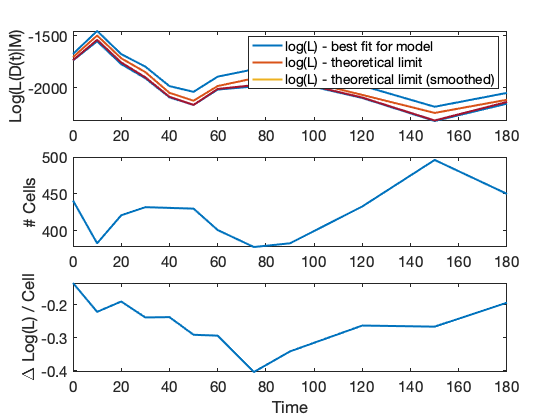 Example 1 -- Adding new Model+Data to an existing multimodel
This is how one adds a second model/data combination. In this case the parameters of the new model are completely independent of the parameter set for the first model.
combinedModel = singleModel.addModel({Model2},{8:14});
combinedModel = combinedModel.initializeStateSpaces;
allParsCombined = ([Model1.parameters{:,2},[Model2.parameters{:,2}]]);
allParsCombined = combinedModel.maximizeLikelihood(...
allParsCombined, fitOptions, fitAlgorithm);
combinedModel = combinedModel.updateModels(allParsCombined);
% Note: This example is shown for illustration purposes only. Usually, if
% one is fitting a single model independently, then it is more efficient to fit
% it separately.
Exiting: Maximum number of iterations has been exceeded
- increase MaxIter option.
Current function value: 44860.666798
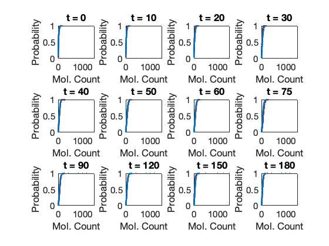 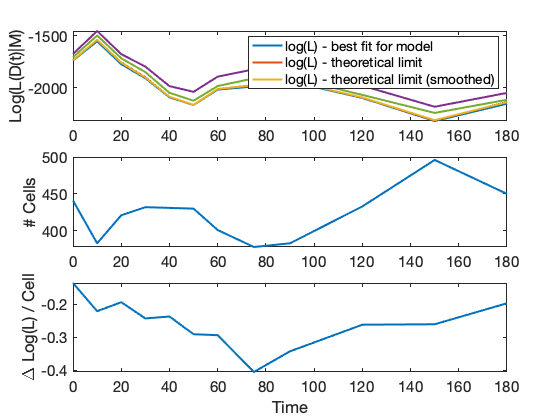 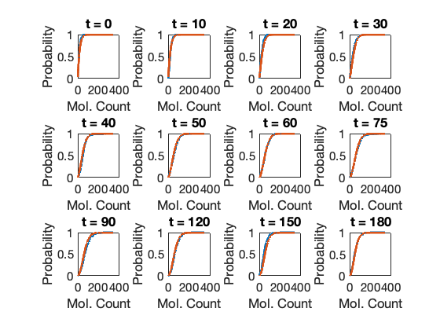 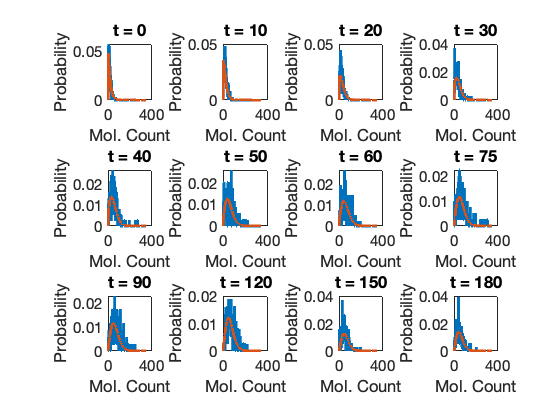 Example 2 -- completely independent parameters.
Here is how we can create the combined model in one shot.
combinedModelIndependent = SSITMultiModel({Model1,Model2},{1:7,8:14});
combinedModelIndependent = combinedModelIndependent.initializeStateSpaces;
allParsIndepdendent = ([Model1.parameters{:,2},[Model2.parameters{:,2}]]);
allParsIndepdendent = combinedModelIndependent.maximizeLikelihood(...
allParsIndepdendent, fitOptions, fitAlgorithm);
combinedModelIndependent = combinedModelIndependent.updateModels(allParsIndepdendent);
Exiting: Maximum number of iterations has been exceeded
- increase MaxIter option.
Current function value: 44860.666798
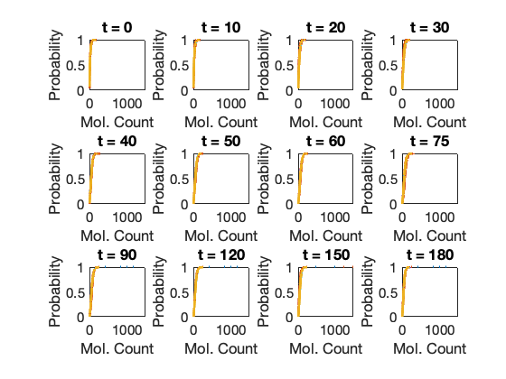 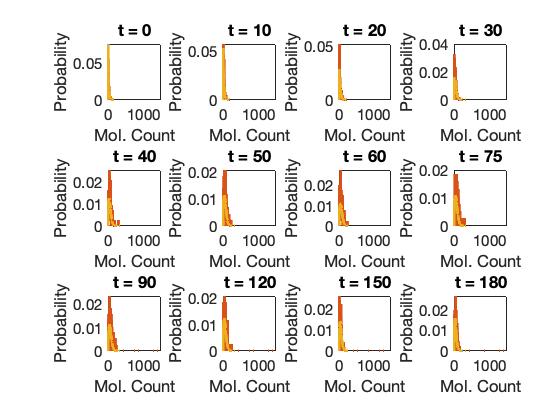 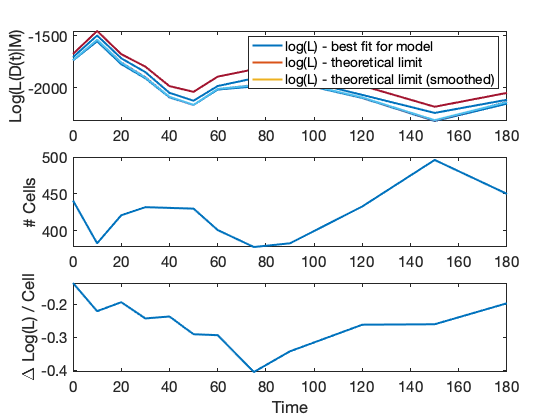 
 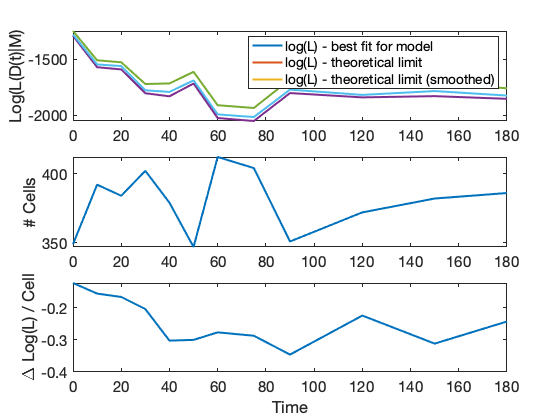
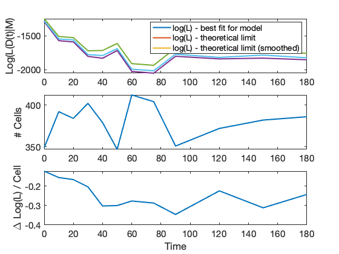 Example 3 -- completely dependent parameters.
Here is an example of how a single set of parameters can be used for both models and data sets. In the following we make a joint model where both Model1 and Model2 use the parameters [1:7].
combinedModelDependent = SSITMultiModel({Model1,Model2},{1:7,1:7});
combinedModelDependent = combinedModelDependent.initializeStateSpaces;
allParsDependent = ([Model1.parameters{:,2}]);
allParsDependent = combinedModelDependent.maximizeLikelihood(...
allParsDependent, fitOptions, fitAlgorithm);
combinedModelDependent = combinedModelDependent.updateModels(allParsDependent);
% Note: This example is shown for illustration purposes only. Usually, if
% one is fitting two replicas of the exact same experiment, then it is
% more efficient to combine the data from both replicas and fit them at the
% same time, e.g. to combined all replicas into one set, simply load the
% data as follows:
% Model = Model.loadData('../ExampleData/DUSP1_Dex_100nM_Rep1_Rep2.csv',{'rna','RNA_nuc'});
Exiting: Maximum number of iterations has been exceeded
- increase MaxIter option.
Current function value: 44909.773709
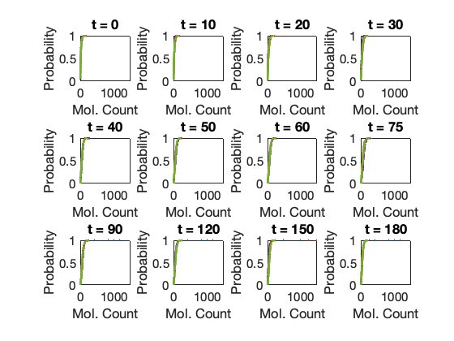 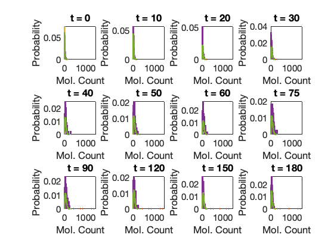  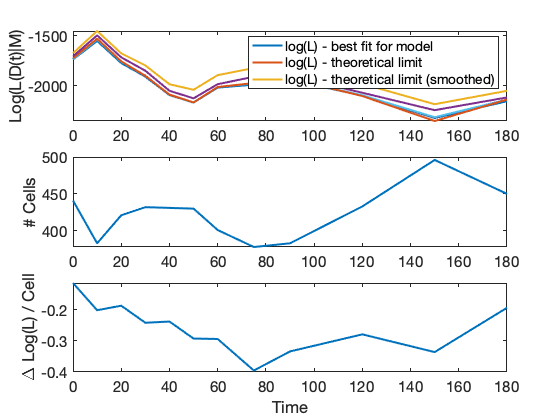 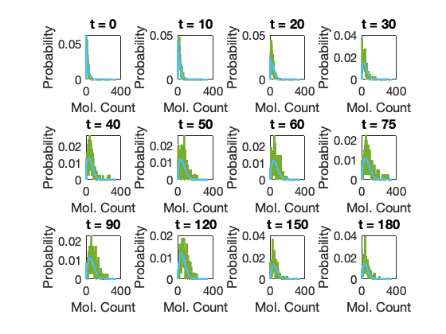 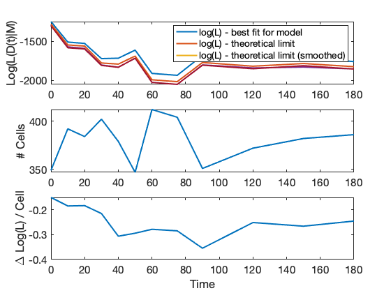
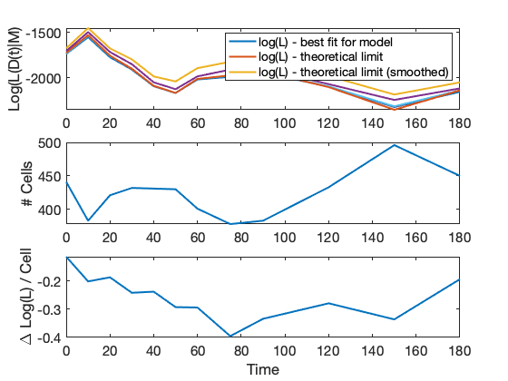 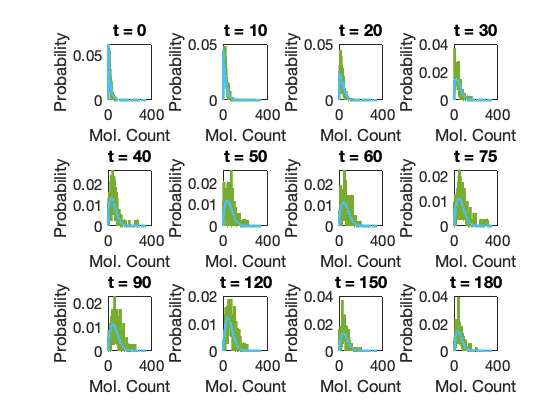 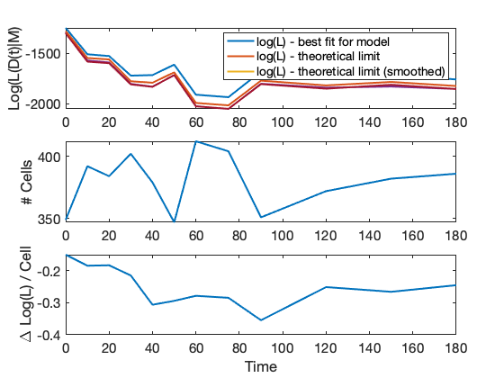 Example 4 -- mixed parameters.
Sometimes it is desirable to only let some parameters change from condition to condition. In this example both Model1 and Model2 use the same parameters [1-4], but parameters [5:7] are only for Model1 and [8:10] are only for Model2.
combinedModelMixed= SSITMultiModel({Model1,Model2},{(1:7),[1:4,8:10]});
combinedModelMixed = combinedModelMixed.initializeStateSpaces;
allParsMixed = ([Model1.parameters{:,2},Model2.parameters{5:7,2}]);
allParsMixed = combinedModelMixed.maximizeLikelihood(...
allParsMixed, fitOptions, fitAlgorithm);
combinedModelMixed = combinedModelMixed.updateModels(allParsMixed);
Exiting: Maximum number of iterations has been exceeded
- increase MaxIter option.
Current function value: 44884.373616
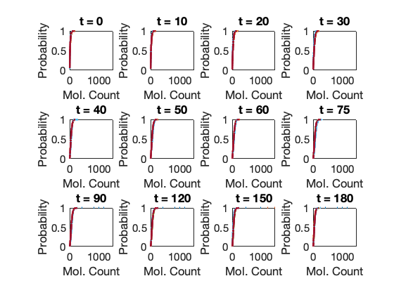 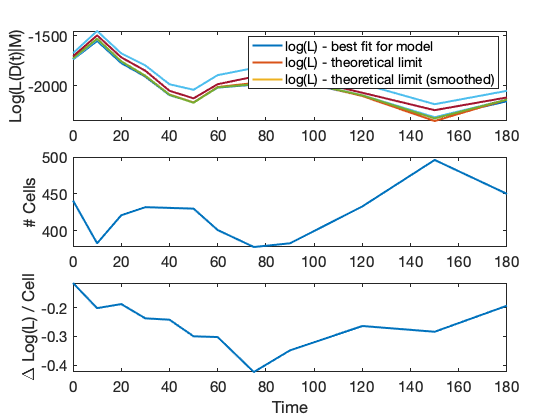 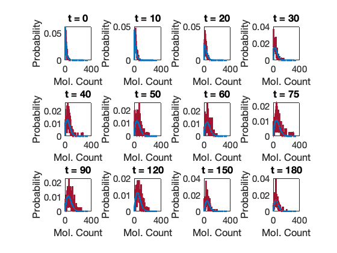 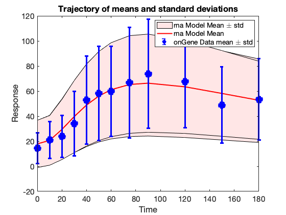 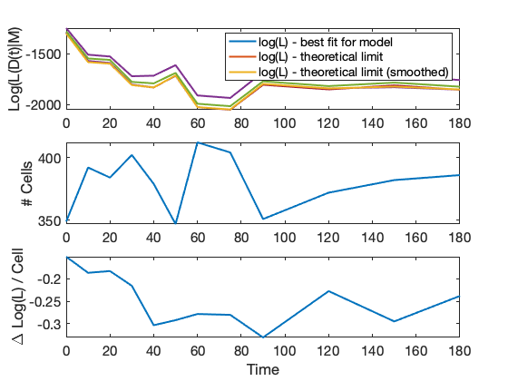 Example 5 -- constrained parameters.
It is often helpful to place constraints on parameters, since it can be expected that cartain parameters should not change that much from one experiment to another, while others could be more sensitive to expeimental error. Here, we will assume that parameters 1-4 are the same for all cases, and that parameters 5-7 are similar but allowed to change by small values.
constraint = @(x)-sum((x(5:7)-x(8:10)).^2);
combinedModelConstrained = SSITMultiModel({Model1,Model2},{1:7,[1:4,8:10]},constraint);
combinedModelConstrained = combinedModelConstrained.initializeStateSpaces;
allParsConstrained = allParsMixed;
allParsConstrained = combinedModelConstrained.maximizeLikelihood(...
allParsConstrained, fitOptions, fitAlgorithm);
combinedModelConstrained = combinedModelConstrained.updateModels(allParsMixed);
Exiting: Maximum number of iterations has been exceeded
- increase MaxIter option.
Current function value: 44884.397681
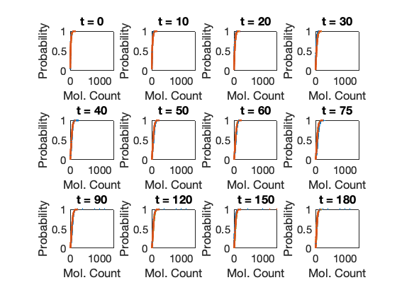 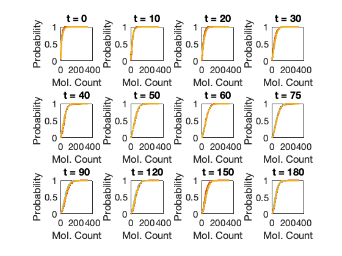 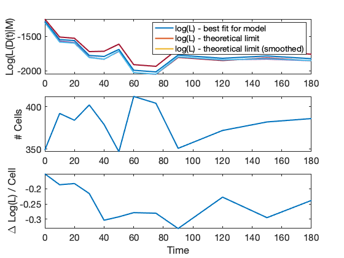